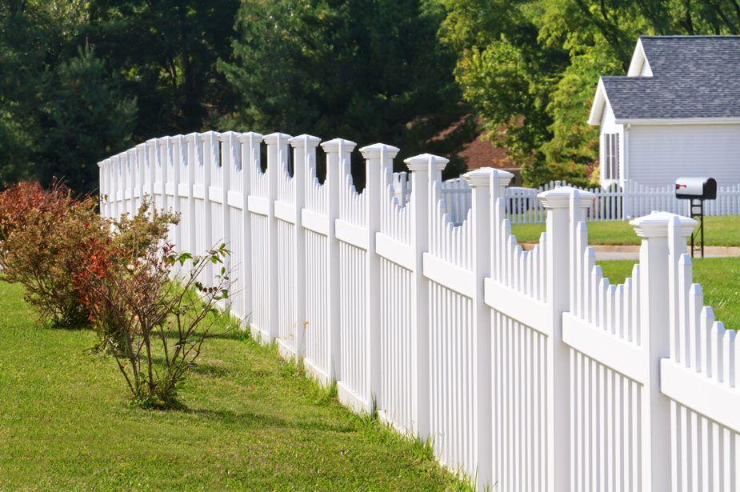

Style
Privacy panels, picket, and two-, three-, or four-rail ranch styles do not share a price.

Vinyl fits a yard where painting is the chore you want off the list. It is a common privacy fence in Jacksonville subdivisions and a common ranch-rail edge on a larger lot. It is a poor swap onto old wood posts. A vinyl line gets its own posts.
Privacy panels screen a patio or a neighbor. Picket and ranch rail stay open, which suits a front yard under the city’s 4-foot front-yard limit or a pasture edge you are marking more than hiding. Dark colors absorb more sun. If the HOA allows white, tan, or black, we talk through which face of the yard sits in full afternoon light.
We price the line on your lot. These are the pieces that move the number.
Privacy panels, picket, and two-, three-, or four-rail ranch styles do not share a price.
A 6-foot privacy line is a different product from a 4-foot front-yard picket.
Standard whites are easier to source than a matched accent color. We order what was approved.
A yard that falls toward a swale needs racked or stepped sections. Flat ground does not.
Gate count and removal of the old fence are separate from the panel price.
Panels are bulky. A backyard with no access from the driveway takes more time.
Vinyl does not need stain, and it does not rot the way bare wood does. Dark colors run hotter in full sun. We look at the color an HOA allows and which side of the yard takes the afternoon light before you order.
Some systems rack and some have to be stepped. A lot that falls toward a ditch needs that choice made before the material is ordered. Stepped panels leave a triangular gap. Racked panels follow the grade.
No. Full privacy panels screen a backyard. Picket and ranch rail are open styles for front yards and for lines where you are marking a boundary more than hiding the yard.
Usually no. A vinyl system is built for its own posts, and the old wood posts are often the part that failed. A vinyl replacement is a new post layout, not a board swap.
Length, height, style, gate count, and whether the old fence comes out. Slope, roots, and a long carry from the driveway add labor. We price the line we measure.
Related: Wood fencing · Aluminum fencing · Commercial fencing
Call (910) 519-2447 or send the town, the approximate length, and the gate count.